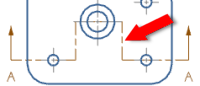

bend segment
Portion of a section line that connects multiple cut segments in a drawing.

cut segment
Portion of a section line that defines a cutting plane in a drawing view.
hinge line
Line used as a reference to rotate a view in proper orthographic space in a drawing.
section cut
2D geometry created by cutting the model geometry with one or more cut planes to view the planar geometry on the cutting planes.